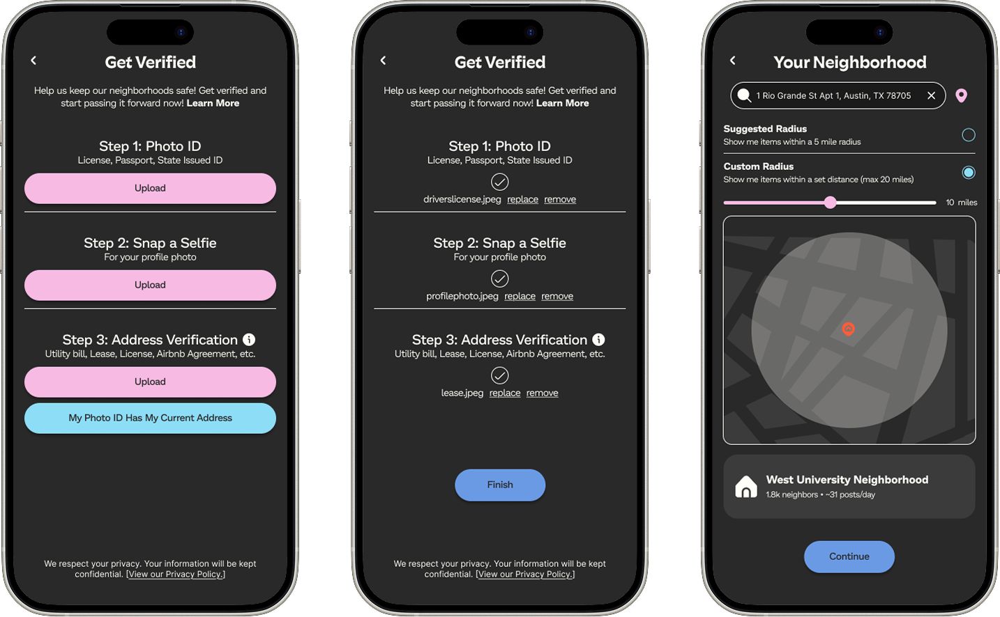
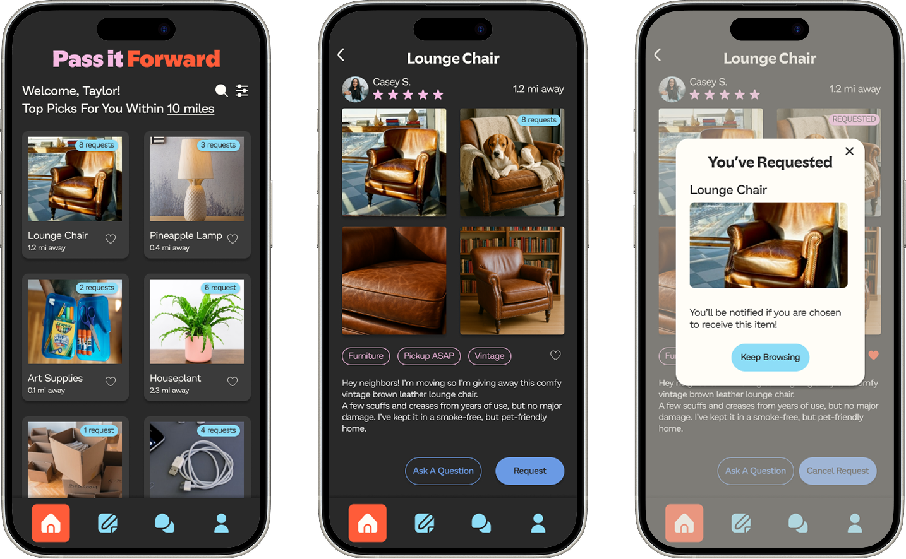
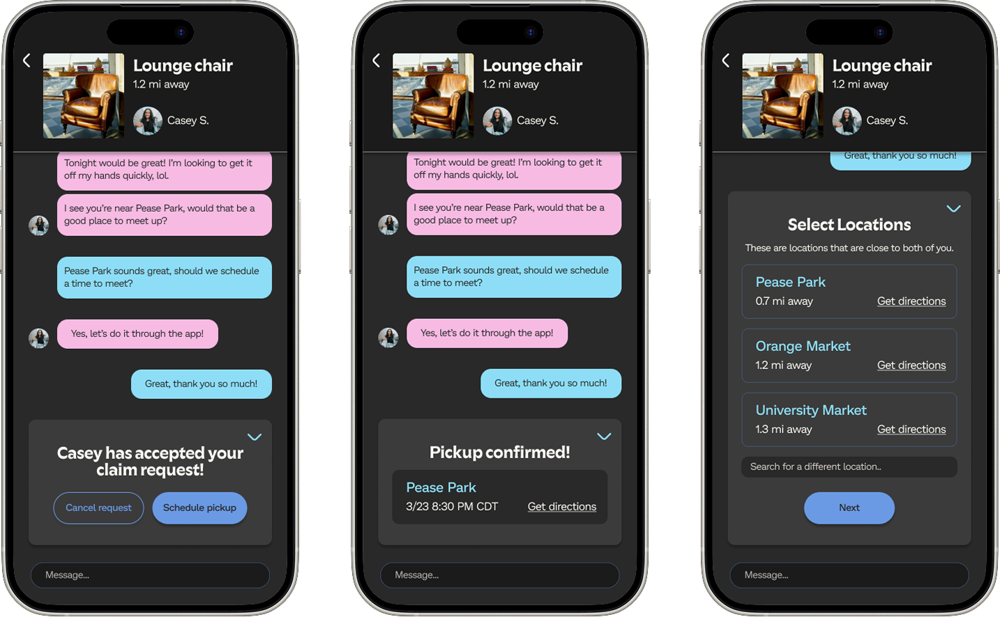
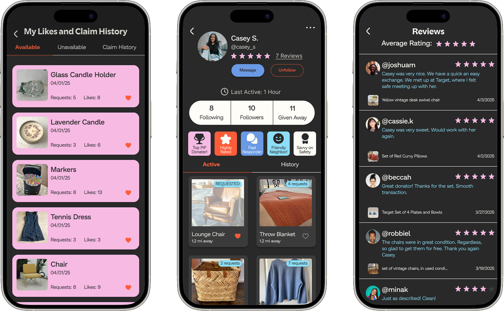

I. Features
Identity Verification
Users are prompted to verify their identity and home address upon signup, ensuring that any in-person interactions will remain safe, secure, and between neighbors.
Requesting Items
Users browse free item listings from your neighbors and then easily view item details and send requests for items that they are interested in.
Arranging Pickup
Users have the option to arrange item pickup through a step-by-step process to minimize the hassle of going back and forth.
User Profiles
Users can view other users' credentials and reviews so that they feel safe and comfortable completing exchanges with them.